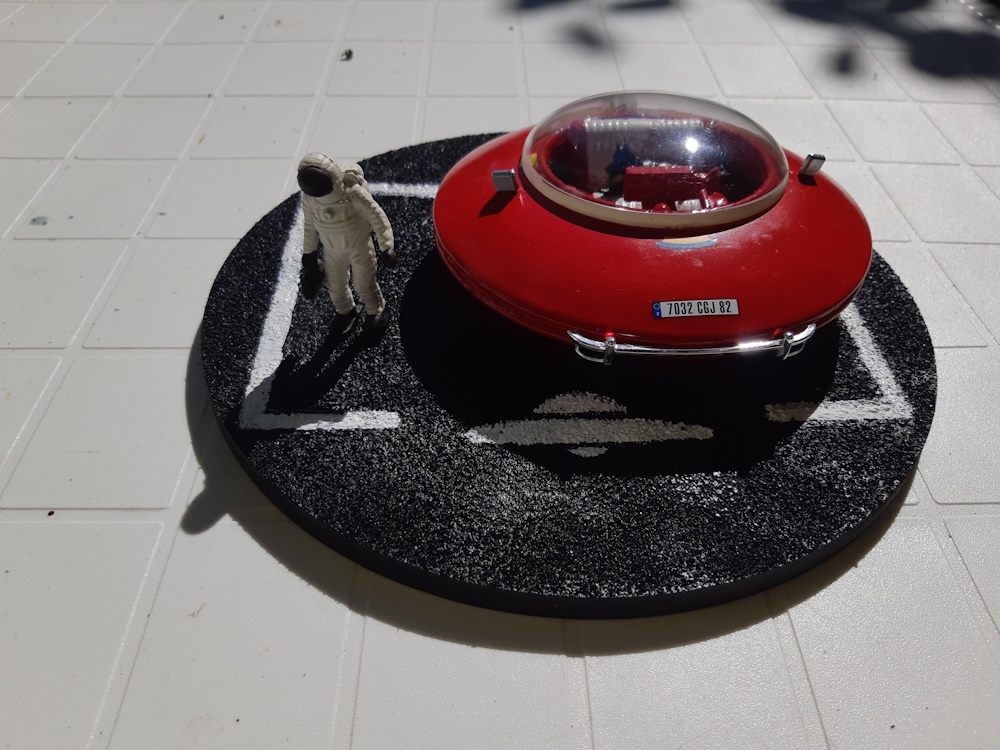
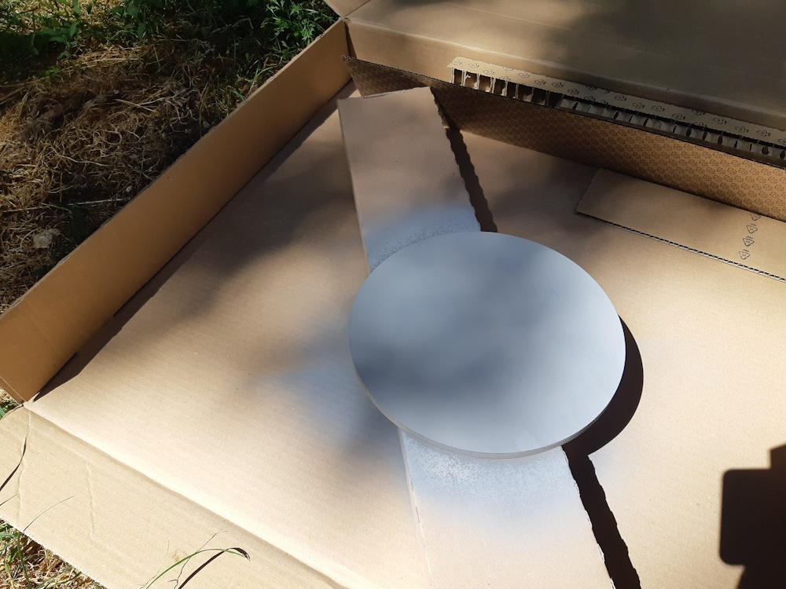
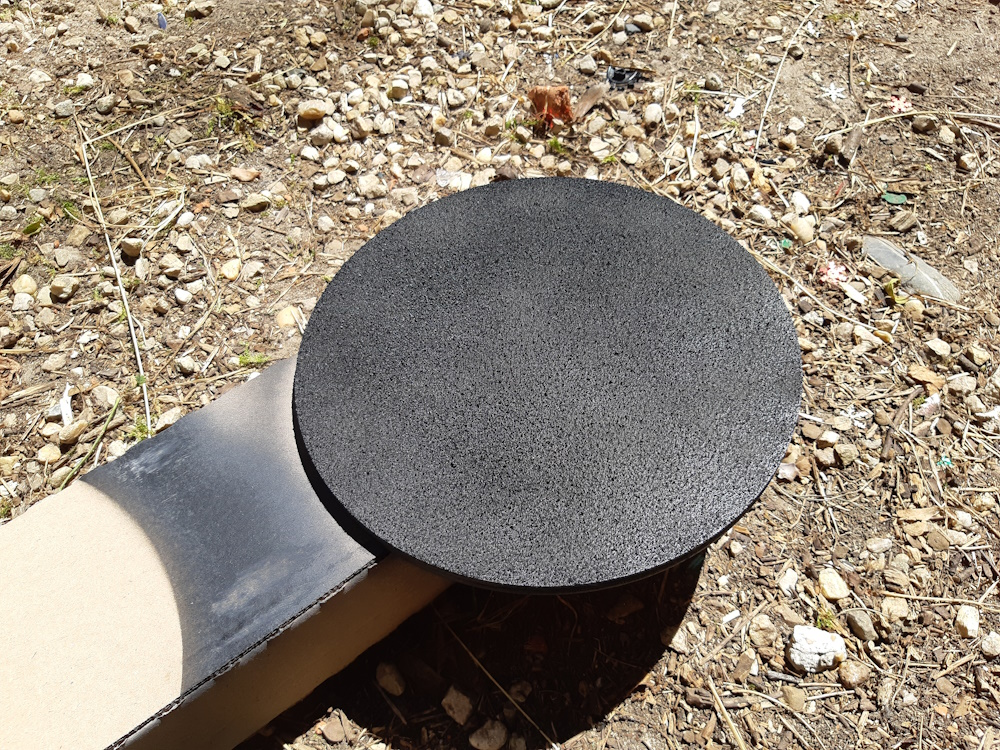
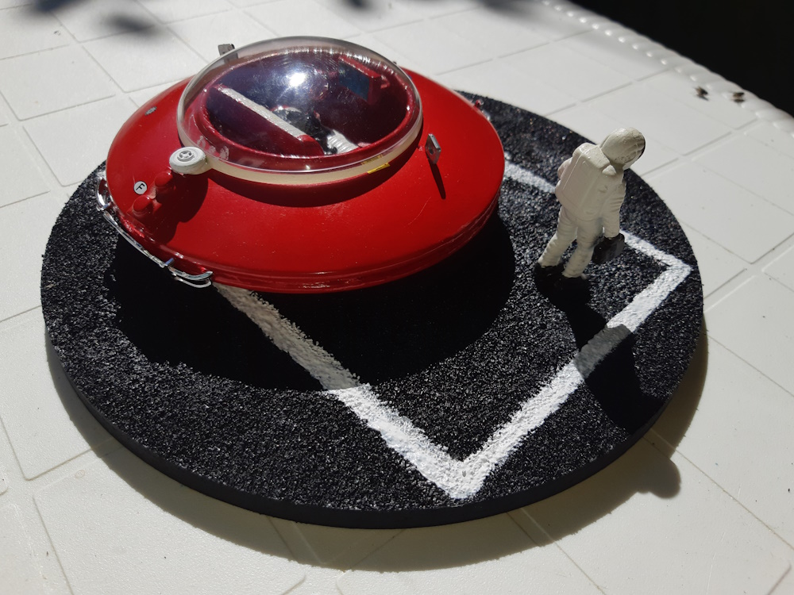

Le PDG de Martian Corp; nous a demandé de lui construire un petit véhicule de transport pour ses rendez-vous stellaires. En faisant mon petit ménage dans mes cartons, je tombe sur un projet de soucoupe commencé y' a 1 an ou deux. Du coup, eu envie de finir ! Alors, je n' ai pas les photos du montage mais voici le résultat !

Elle est faite avec deux soucoupes de tasses à café en plastique, dont une percée, et mises l' une sur l' autre. Le siège et le volant viennent d' un vieux kit de 2CV ( enfin je crois vu que ça remonte à vieux... ). Un lego à l' arrière et pareil pour l' ordinateur de bord. le dôme est fait avec un morceaux de boule à déco qu' on trouve dans les magasins très culturés. Juste eu à mettre une bande cache et peindre un liseret blanc au pinceau. Les décalques viennent des kits d' un combi et d' un avion. Suffit d' ajouter cette figurine d' astronaute avec une valise... Et voilou !!! Bon, j' avais prévu des emplacements pour des rétros mais pas retrouvés donc... Un peu de fibre de coton tige ( non-usagé, je précise !!! ) peinte en jaune ( c' est pour ça que je précisais non-usagé ) pour simuler la mousse de banquette que j' avais gratté un peu pour représenter l' usure et j' ai procédé au changement de l' immatriculation en plaque française. Soyons chauvin ! Je rajoute un chien que j'' avais en stock et qui est à la même échelle que l' astronaute. ça s' intègre nickel ! Peinture noire pour lui. ça apportera un côté marrant et réaliste à l' ensemble...

Fabrication de rétros faits dans des morceaux de grappes. J' ai également repeint un peu la banquette... Et ajout de pare-chocs provenant d' une mini ( enfin je crois... ) Peinture du chien.

Le petit système pour lever le dôme fait avec une roue d' avion.

Maintenant place au socle : Je vais réaliser une place de parking avec marquage blanc et silhouette de soucoupe au lieu de famille nombreuse. Je pars sur un socle en bois venant du magasin très culturé...

Voilà comment je procède: Deux couches d' apprêt

Séchage puis pulvérisation de colle en spray et je répand doucement du bicarbonate de soude. Je repulvèrise de la colle et répand de nouveau du bicarbonate et ainsi de suite jusqu' à l' effet attendu.

Dernière pulvérisation sur l' ensemble et séchage. Une couche de gris, séchage, puis une couche de noir et voilou

Une fois la peinture noire sèche, évitez de triturer la surface, certains grains pourraient éventuellement partir. Je dis éventuellement car pour ma part ça ne s' est jamais produit ( j' en ai fait 5 ou 6 ) mais un ami à testé et c' est arrivé ( rien de bien méchant mais bon... ). Mieux vaut un passage de vernis qui sert alors de fixateur définitif et là, plus de soucis du tout ! Le marquage est fait ! Les lignes sont peintes à la main, histoire de faire travailler le bras et me lancer un petit défi pour voir... Et je m' en sors pas si mal. C' est pas parfait mais ça me va. Le logo de la soucoupe est faite avec un pochoir et un tampon.

Et maintenant, mise en place du tout !

Le PDG est ravi de sa nouvelle aquisition ! Montage sans prise de tête que j' ai adoré faire !!!